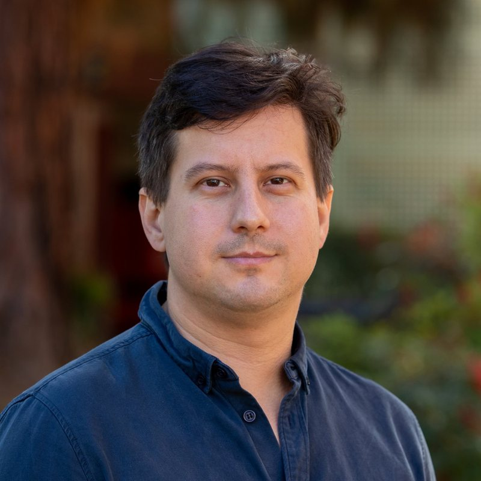

⟨χ| Dark Matter and Neutrino Lab |ν⟩

Assistant Professor
UC Riverside
Department of Physics & Astronomy
Our goal
to shine light on dark matter—the mysterious matter that makes up 85% of the mass of all matter in the universe but lies outside our understanding of particle physics—using direct detection and neutrino experiments to search for physics beyond the Standard Model. We use liquid argon-based detectors within large, multi-national collaborations, building from R&D toward new detector technology and low-background techniques and by collaborating with theorists to develop new dark matter searches. This work has close ties with nuclear power and medicine, medical imaging, and other applications.
Beyond our on-campus activities, we use facilities around the US, Italy, Canada, Mexico, and Spain. Our team members have the chance to spend time at these facilities.
Interested?
Get in touch! We're currently hiring undergrads, grad students, and postdocs.
For prospective grad students: if you are interested in my lab when you apply, list your interest as "Experimental Cosmology & Instrumentation" to make sure I find your application.
Latest papers
All publications →Experiments
Research overview →DarkSide-20k
A 50-tonne liquid argon TPC at LNGS in Italy for heavier dark matter. UCR designs and will operate the outer veto.
2016 to presentDEAP-3600
A 3.3-tonne liquid argon scintillation detector 2 km underground at SNOLAB in Canada.
2013 to 2018DarkSide-50
A 50 kg dual-phase liquid argon TPC at LNGS in Italy.
FutureDarkSide-LowMass
A tonne-scale ionization detector for light dark matter.
FutureDUNE
Four 10-kilotonne liquid argon far detectors at SURF in South Dakota.
Funding from